Making Mountains From Molehills
by Jim "Sniper297" Ward
Most of you know I haven't tried the DEM extractors yet, in fact my layout, Port Ogden and Northern, was originally extracted at the beginning of July 2002 before DEM became available. People seeing it for the first time are still asking me questions about DEM, though, so I figured I might as well throw in a tutorial on how to do hills and mountains without DEM. Only thing I can do, since I don't know anything about DEM I can't help you with it, honest.
So here goes, I lay the track first, sometimes on the ground, sometimes above or below it, I have 384mb of RAM so I can hit that old "Y" key quite a few times before I have to save and exit to clear memory. Your milage may vary. Here's the relocated Chippewa Falls lumber camps, I moved the buildings using the control select method, and slid them onto the new quad. Got rid of that cartoon green terrain.ace, laid the track and positioned the structures.
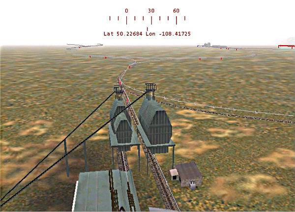
There was a river running alongside the track in the old Chippewa Falls area, so I want one here too, and maybe a lake. Time to lay more track, sharp curves and dynamic track, only a few meters below the ground.
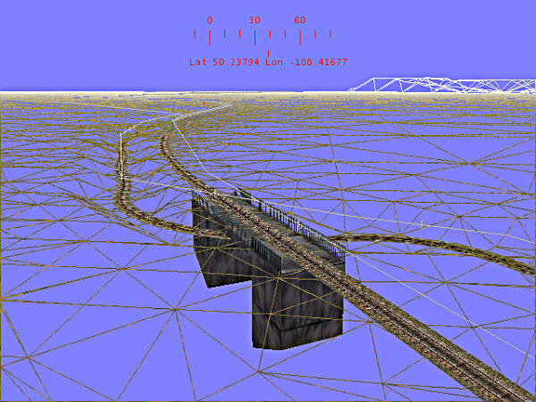
After laying the track where I want the river, I make a big oblong circle of dynamic track for the lake edge, hitting the "Y" key as I go along to create the riverbed. Then I go along the track in wire frame mode deleting all the track I laid, making sure I don't leave any orphans. For the lake bed I just placed a single piece of 100 meter track in the middle, lowered it to -3 meters, and swept it in a circle hitting Y. Increasing the width makes this go pretty fast, you can go up to 50 but I usually stay with 20 to 40 for better control.
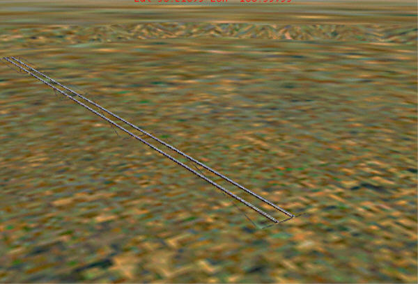
Next thing to do is set the tile water height above the bed and below the rest of the terrain, and toggle water on for the tiles that the water goes through.
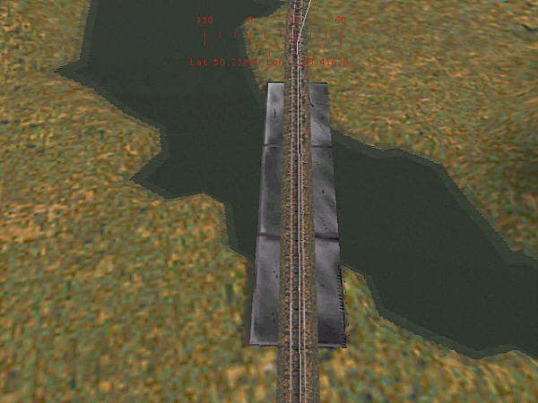
Probably change that bridge before I'm done, don't like the look of it. Now to do some hills. 45 degree yard switches aren't useful for much unless you're running real short engines and cars, but they're the best friends I've had for making hills, because of the odd shape.
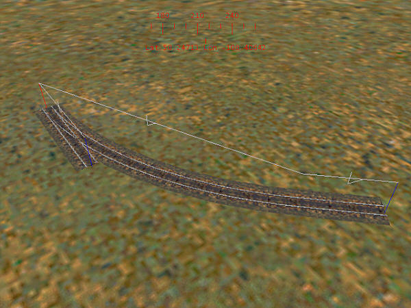
The terrain editing tool affects the way this works, so for those of you who haven't figured it out yet, embankment is how steep the slope is above ground, width is the width of the flat area (in meters, I think), and cutting is steepness of walls below ground.
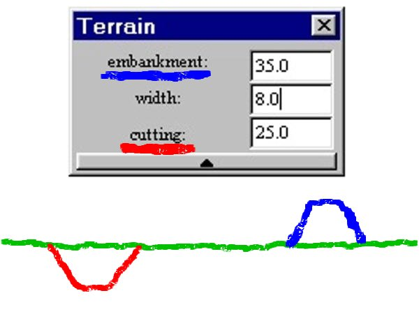
For hills I generally set width at 8 so I don't get big flat tops, embankment at 35 degrees, and cutting at 25 degrees. I occasionally vary the embankment from 15 to 50 degrees, any more than 50 don't look realistic unless you're making cliffs, then it's a lot of work to avoid jaggy edges. Lay the track piece,raise it up in the air, select the rotation tool to angle it up or down, hit Y. Rotate a quarter, third, or half circle, angle the elevation in theopposite direction, hit Y again.
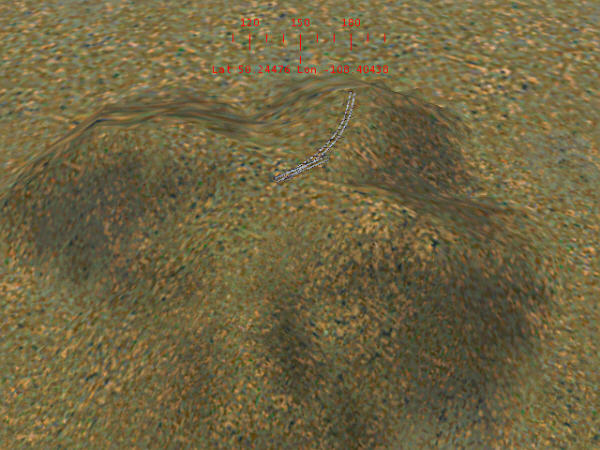
Or you can just move it around varying the height, once you get some practice it takes about a minute to do something like this:
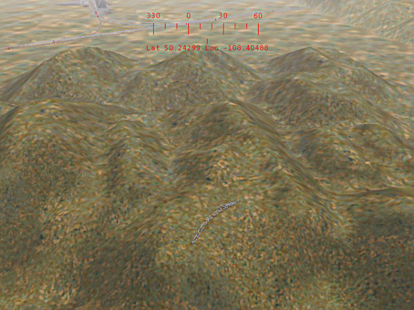
Aw, %#$@$#! I went and covered part of my track! Now what?
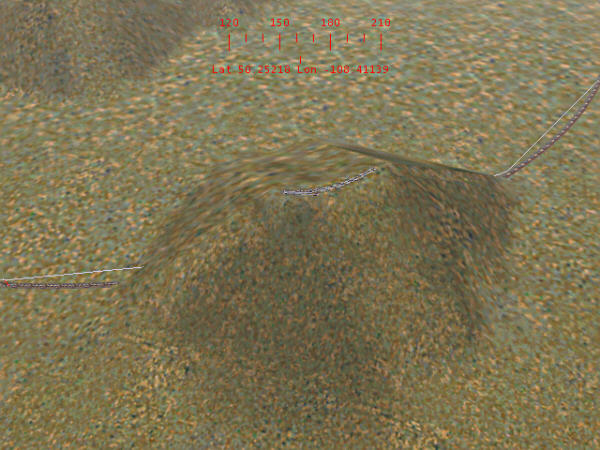
That's actually what you want, here's where the "cutting" setting comes in. You'll have to reset width to 12 to 18 to clean up spillover. Set the cutting angle to 20 degrees, click on the first track piece and hit Y. Now set cutting for 30 to 40 degrees for the next cut. This is a good way to make tunnel approaches look better too, gradually steepening the cut up to the tunnel face.
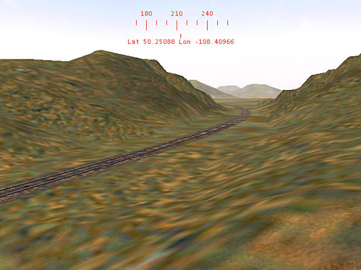
Add trees and structures to taste, flattening areas where needed. DON'T FORGET TO MAKE A BACKUP COPY!
Here's the new Chippewa Falls area, before:
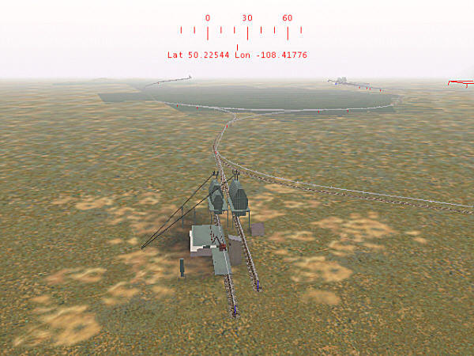
And after:

The last step is the most important, known as "keeping your eye on the ball". The primary reason I bought this game was not to create works of art, so after creating a good looking area I always remember to play with my trains on it!
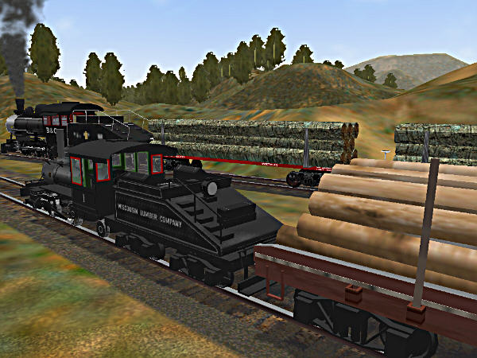